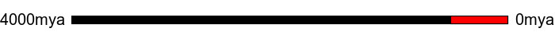

You stick with your worm shape, which is pretty well adapted, and spread around the world in massive numbers. Your family, the Nematoid worms, eventually turn into thousands of different, but similar little worms, each adapted for a specific part of the global ecosystem. Some live among the roots of trees, others are parasitic on a variety of hosts.
Possibly the most amazing thing about you is that you are everywhere. There is no location on Earth where life is found where nematode worms are not found.
That's as far as you can evolve here! You can go back to the start with the link above, or share what you became with the icons below. 